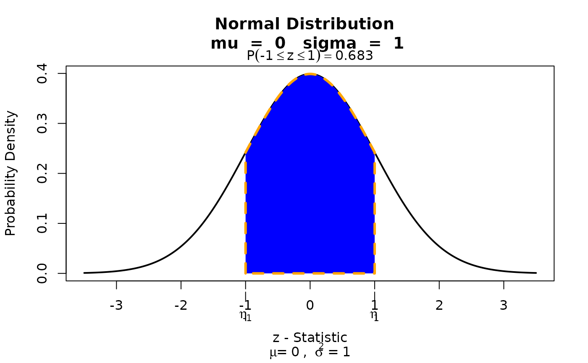

Acts as a director of traffic and first line of error handling regarding submitted visualization requests. This function should only be used by advanced users.
Arguments
- dist
a string that should be contain a supported probability distributions name in R. Supported continuous distributions:
"beta","chisq","exp","gamma","norm", and"unif". Supported discrete distributions:"binom","geom","hyper","nbinom", and"pois".- stat
a statistic to obtain the probability from. When using the "bounded" condition, you must supply the parameter as
stat = c(lower_bound, upper_bound). Otherwise, a simplestat = desired_pointwill suffice.- params
A list that must contain the necessary parameters for each distribution. For example,
params = list(mu = 1, sd = 1)would be for a normal distribution with mean 1 and standard deviation 1. If you are not aware of the parameters for the distribution, consider using thevisualize.distfunctions listed under the "See Also" section.- section
Select how you want the statistic(s) evaluated via
section=either"lower","bounded","upper", or"tails".- strict
Determines whether the probability will be generated as a strict (<, >) or equal to (<=, >=) inequality.
strict=requires either values = 0 or =FALSE for strict OR values =1 or =TRUE for equal to. For bounded condition use:strict=c(0,1)orstrict=c(FALSE,TRUE).
Examples
# Defaults to lower tail evaluation
visualize.it(dist = 'norm', stat = 1, list(mu = 3 , sd = 2), section = "lower")
# Set to evaluate the upper tail.
visualize.it(dist = 'norm', stat = 1, list(mu=3,sd=2),section="upper")
# Set to shade inbetween a bounded region.
visualize.it(dist = 'norm', stat = c(-1,1), list(mu=0,sd=1), section="bounded")

# Gamma distribution evaluated at upper tail.
visualize.it(dist = 'gamma', stat = 2, params = list(alpha=2,beta=1),section="upper")
 # Binomial distribution evaluated at lower tail.
visualize.it('binom', stat = 2, params = list(n=4,p=.5))
# Binomial distribution evaluated at lower tail.
visualize.it('binom', stat = 2, params = list(n=4,p=.5))